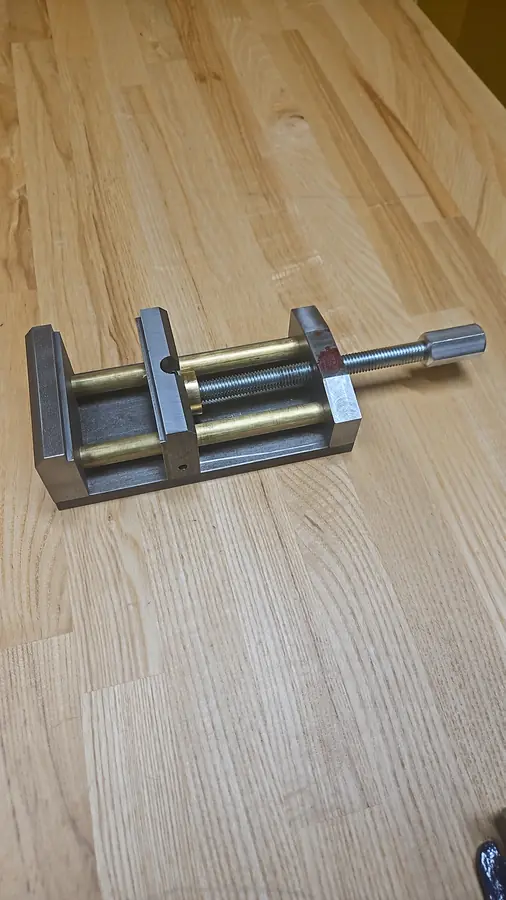

The body and jaws are steel, guided by two brass rods and driven by a threaded screw with a turned handle. The project covered three core shop skills:
- Manual mill: squaring and facing stock, drilling and pocketing.
- Manual lathe: turning the round parts.
- Conversational milling: programming features directly at the CNC control, without CAM.
